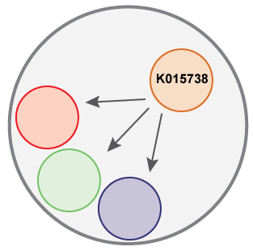
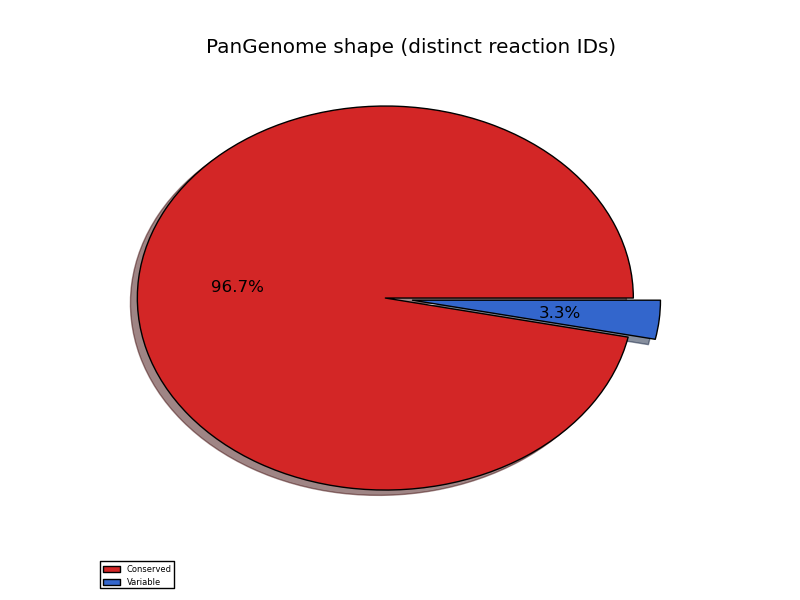
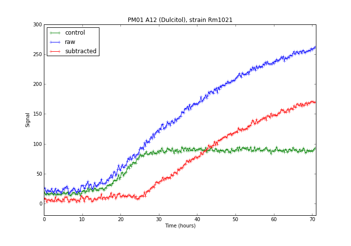
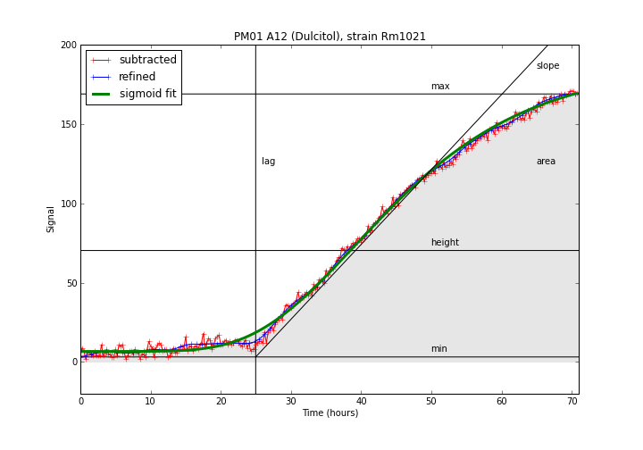
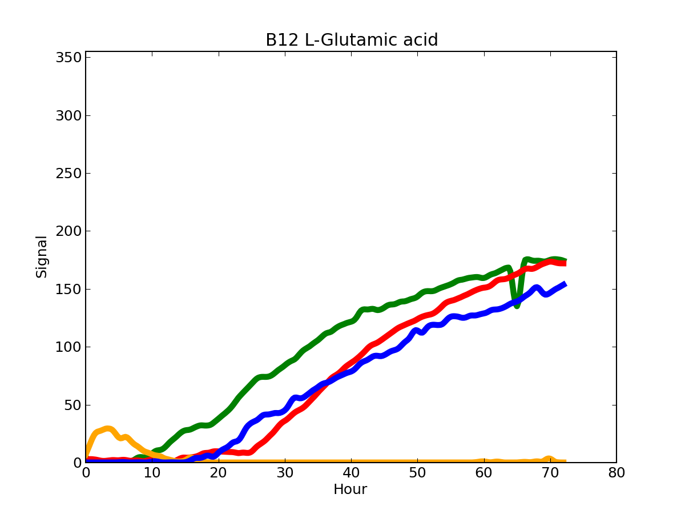
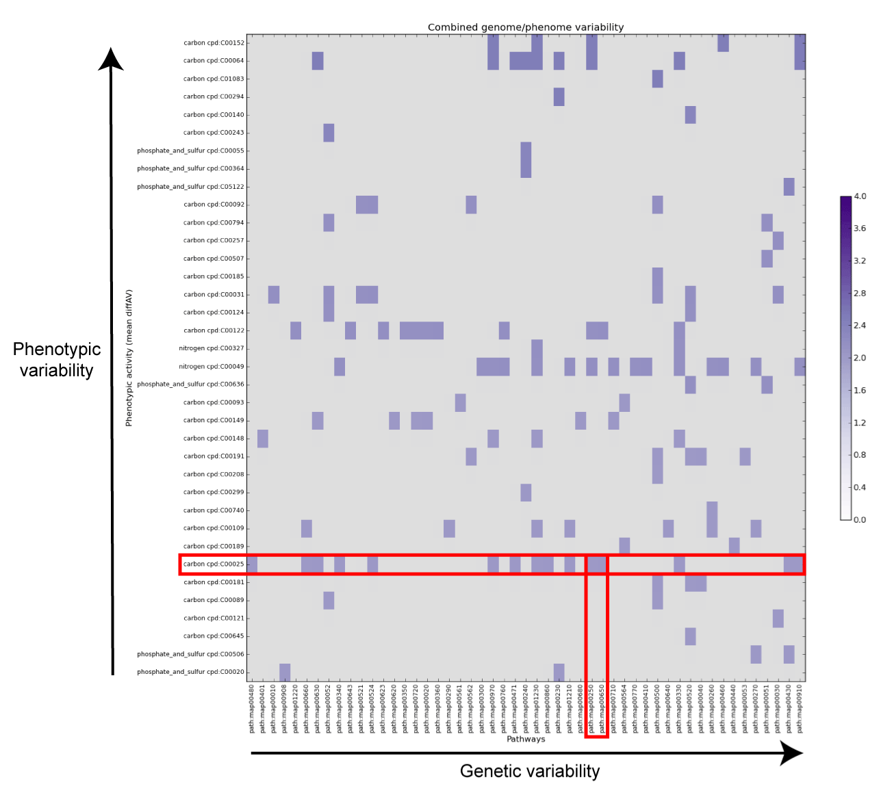
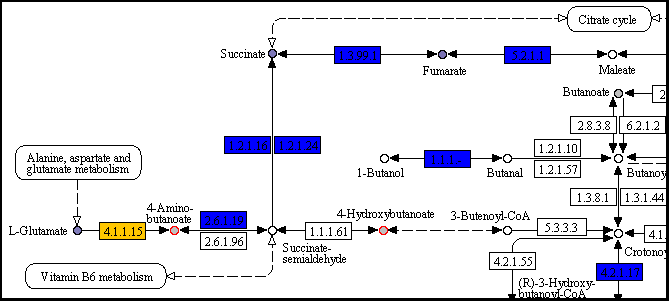
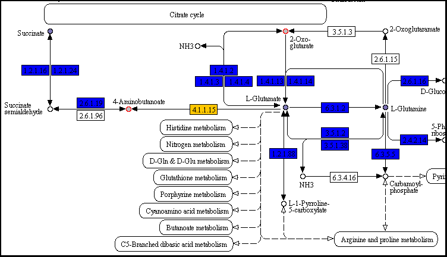
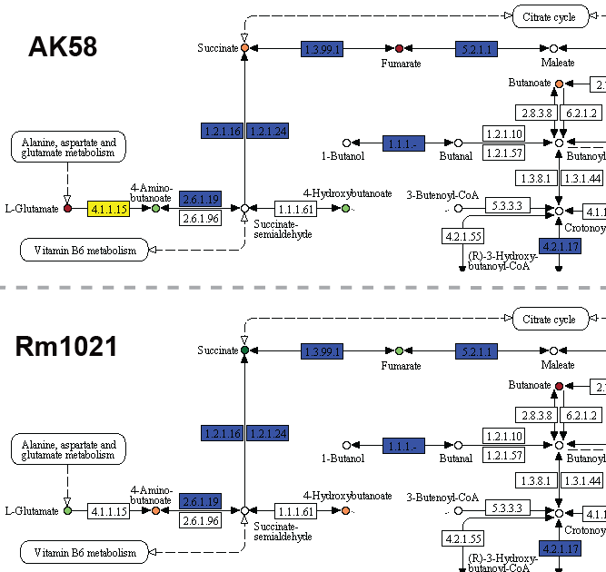
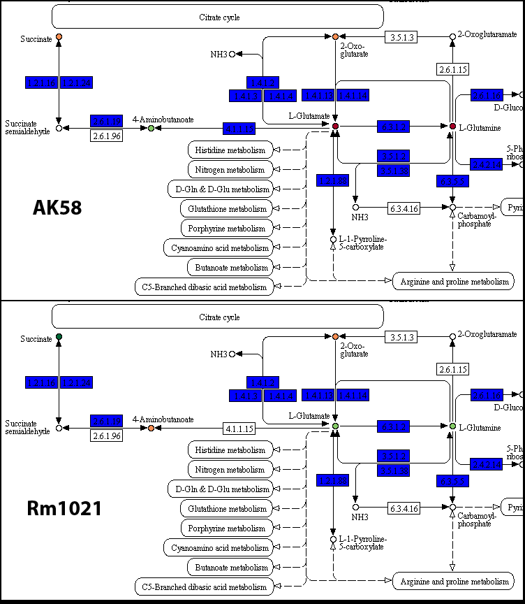

Tutorial
Step-by-step tutorial on a real world dataset
This tutorial will cover the complete analysis on the pangenome/panphenome of four Sinorhizobium meliloti strains, with discussions on the results and their biological interpretation. The same results can be obtained by downloading the ductape_data package (folder smeliloti); the whole set of commands used in this tutorial are provided as well. This tutorial takes for granted that you may have at least some basic experience on the usage of the command line.
#!/bin/bash # Setup the project dape init dape add Rm1021 -c red dape add BL225C -c green dape add AK83 -c blue dape add AK58 -c orange # Add the genomic data and KAAS outputs dgenome add-dir genome/ dgenome add-ko kegg/AK58.tab kegg/AK83.tab kegg/Rm1021.tab kegg/BL225C.tab # Pangenome estimation/KEGG mapping dgenome start -n 4 -p SinMel_ # Annotate the orthologs w/o KEGG IDs dgenome annotate # Statistics and exports dgenome stats > genome_stats.tsv dgenome export # Add the phenomic data dphenome add-dir phenome # Control signal subtraction dphenome zero # Parameters calculation and Elbow test to decide the value of k dphenome start -e -g # AV/parameters calculation (k=5) dphenome start -f -n 5 # Curve plots dphenome plot # Activity rings dphenome rings mv ActivityRing.png ActivityOverall.png dphenome rings -o Rm1021 -d 2 # Statistics and exports (including YAML files) dphenome stats -a 3 -d 2 > phenome_stats.tsv dphenome export # Pathway maps dape map -d 3 dape map -a # Combined genomic/phenomic analysis dape start -p -t 2 dape start -a -p -t 2
For further questions and updates, please contact ductape-users@googlegroups.com or subscribe to the user group
Setup
Project setup
DuctApe relies on a single file (by default called ductape.db), in which all the information will be stored and from which all the outputs can be generated. The first step in the analysis is to create this file and to add the analyzed strains to it.
dape init
dape add Rm1021 -c red -n "Sinorhizobium meliloti" -d "Reference strain" dape add BL225C -c green -n "Sinorhizobium meliloti" dape add AK83 -c blue -n "Sinorhizobium meliloti" dape add AK58 -c orange -n "Sinorhizobium meliloti"The project file now contains the name of the strains whose genomes and phenomes will be added and analyzed; the strain name provided with the
add command should be used also in the genomic and phenomic files. We have also assigned a specific color for each strain: the Rm1021 reference strain will have the red color.
Genome
KEGG annotation and pangenome estimation
The genome is added to the project file by providing a FASTA file with all the protein sequences belonging to each strain. The easiest way to add more than one genome is to prepare a directory with one file for each genome, named ORGID.faa and use the add-dir command; just substitute ORGID with the strain names provided when setting up the project.
dgenome add-dir genome
add-ko command.
dgenome add-ko kegg/AK58.tab kegg/AK83.tab kegg/Rm1021.tab kegg/BL225C.tab
Keep in mind that other programs may be used to infer the pangenome, and their results may be imported with the add-orth command.
dgenome start -n 4 -p SinMel_

The outer circle represents a OG, each smaller circle a protein from each strain; only the gene from strain AK58 has a KEGG annotation. The annotate command will transfer that annotation to the other proteins inside the OG.
dgenome annotate
dgenome stats

pangenome_shape.png
Since the four strains belong to the same species, most of their genes are conserved (nearly 60%); still, we observe that a significant fraction of the genes have a different presence/absence pattern in the four strains. This could mean that their metabolic reconstruction may exhibit some interesting differences.
single.png
| ID | name | description | proteome size | mapped to kegg | KEGG orthology IDs | pathways | reactions | unique reactions | exclusive reaction IDs |
|---|---|---|---|---|---|---|---|---|---|
| AK58 | Sinorhizobium meliloti | 6934 | 3122 | 1907 | 122 | 3051 | 1326 | 9 | |
| AK83 | Sinorhizobium meliloti | 6510 | 3070 | 1888 | 122 | 2934 | 1316 | 5 | |
| BL225C | Sinorhizobium meliloti | 6359 | 3122 | 1916 | 122 | 3089 | 1328 | 7 | |
| Rm1021 | Sinorhizobium meliloti | Reference strain | 6218 | 3188 | 1919 | 122 | 2981 | 1323 | 0 |
First output table
The four strains have a similar number of genes (blue bar and "proteome size" column), as well as a similar number of proteins annotated with a KEGG orthology ID (yellow bar and "mapped to KEGG" column); since most of the KO IDs are mapped to a specific enzymatic reaction, also the number of KEGG reactions (and univoque reactions IDs) are similar between the four strains (red bars and "reactions/unique reactions" columns). This output suggests that the differences in the metabolic network of these four strains may indeed be limited to a few genes/reactions; in fact, the column "exclusive reaction IDs" reports those reaction IDs that are found exclusively in one strain. While the reference strain has no such reactions, the other three strains have a few exclusive metabolic features. Theexport command will output these reaction IDs.
Even though only half of the genes of each genome has been mapped to KEGG, keep in mind that many genes are not directly related to the metabolism, and are therefore impossible to be annotated through KEGG.

pangenome_stats.png
| kind | size | mapped to kegg | KEGG orthology IDs | pathways | reactions | unique reactions | exclusive reaction IDs |
|---|---|---|---|---|---|---|---|
| core | 5077 | 2802 | 1846 | 122 | 2757 | 1304 | 1017 |
| dispensable | 3826 | 815 | 379 | 98 | 575 | 331 | 44 |
| accessory | 1225 | 304 | 220 | 78 | 288 | 180 | 22 |
| unique | 2601 | 511 | 240 | 83 | 287 | 219 | 21 |
Second output table
When the same analysis is applied to the pangenome, similar conclusions can be drawn. Most of the genes that are annotated by KEGG belong to the conserved "core" fraction, while only 815 genes from the dispensable genome are mapped to the metabolic maps. This implies that the majority of the metabolic-related orthologs of these four strains will be conserved. By looking at the "exclusive reaction IDs" column (light red bar in the graph), it may be noticed that some reaction IDs (that are distinct metabolic reactions) are found only inside the variable (dispensable) pangenome fraction, meaning that genes encoding these functions are not shared by the four strains. pangenome_reaction_shape.png
| kind | distinct reaction IDs |
|---|---|
| conserved | 1304 |
| variable | 44 |
Third output table
The analysis on the pangenome doesn't take into account a phenomenon that may be encountered in distant genomes, that are those genes that have the same metabolic function but are NOT orthologs. According to the above table, only 44 reactions are found to be variable between the four strains. It should be noted that for this dataset (closely related strains), the number of variable reaction IDs is identical to the number of exclusively dispensable reaction IDs. In conclusion, it appears that some metabolic variability should be expected and it may be related to this genetic variability.dgenome export
#re_id name description pathway(s) R04942 L-Serine hydro-lyase (adding homocysteine) L-Serine + Selenohomocysteine <=> L-Selenocystathionine + H2O R01663 dCMP aminohydrolase dCMP + H2O <=> dUMP + Ammonia map00240,map01100 R06979 Ectoine hydro-lyase N-gamma-Acetyldiaminobutyrate <=> H2O + Ectoine map00260,map01100,map01120,map01210 R01290 L-serine hydro-lyase (adding homocysteine; L-cystathionine-forming) L-Serine + L-Homocysteine <=> L-Cystathionine + H2O map00260,map00270,map01100,map01230 R00891 L-serine hydro-lyase (adding hydrogen sulfide, L-cysteine-forming) L-Serine + Hydrogen sulfide <=> L-Cysteine + H2O map00260
reactions_exclusive_AK83.tsv
#re_id name description pathway(s) R00489 L-aspartate 1-carboxy-lyase (beta-alanine-forming) L-Aspartate <=> beta-Alanine + CO2 map00410,map00770,map01100,map01110 R01682 3-Sulfo-L-alanine carboxy-lyase (taurine-forming) L-Cysteate <=> Taurine + CO2 map00430,map01100 R00374 glycine:acceptor oxidoreductase (cyanide-forming) Glycine + 2 Acceptor <=> Cyanide + CO2 + 2 Reduced acceptor + H+ map00460,map01100 R00261 L-glutamate 1-carboxy-lyase (4-aminobutanoate-forming) L-Glutamate <=> 4-Aminobutanoate + CO2 map00250,map00650,map01100 R01521 beta-D-Glucose:NADP+ 1-oxoreductase beta-D-Glucose + NADP+ <=> D-Glucono-1,5-lactone + NADPH + H+ map00030,map01120 R01520 beta-D-Glucose:NAD+ 1-oxoreductase beta-D-Glucose + NAD+ <=> D-Glucono-1,5-lactone + NADH + H+ map00030,map01120 R01154 acetyl-CoA:putrescine N-acetyltransferase Acetyl-CoA + Putrescine <=> CoA + N-Acetylputrescine map00330,map01100 R02466 3-Sulfino-L-alanine carboxy-lyase 3-Sulfino-L-alanine <=> Hypotaurine + CO2 map00430,map01100 R05704 glycine:acceptor oxidoreductase (hydrogen-cyanide-forming) Glycine + 2 Acceptor <=> Hydrogen cyanide + CO2 + 2 Reduced acceptor
reactions_exclusive_AK58.tsv
#re_id name description pathway(s) R06199 None Starch(n+1) + H2O <=> alpha-D-Glucose + Starch(n) R07659 None UDP-L-Ara4O + L-Glutamate <=> UDP-L-Ara4N + 2-Oxoglutarate map00520,map01110 R01790 1,4-alpha-D-Glucan glucohydrolase Starch + H2O <=> alpha-D-Glucose + Starch map00500,map01100 R01791 Dextrin 6-alpha-D-glucanohydrolase Dextrin + H2O <=> alpha-D-Glucose + Dextrin map00500,map01100 R01741 D-Gluconate:(acceptor) 2-oxidoreductase D-Gluconic acid + FAD <=> 2-Keto-D-gluconic acid + FADH2 map00030,map01100,map01120 R01621 D-Xylulose 5-phosphate D-glyceraldehyde-3-phosphate-lyase (adding phosphate; acetyl-phosphate-forming) D-Xylulose 5-phosphate + Orthophosphate <=> Acetyl phosphate + D-Glyceraldehyde 3-phosphate + H2O map00030,map00680,map00710,map01100 R00749 ethanolamine ammonia-lyase (acetaldehyde-forming) Ethanolamine <=> Acetaldehyde + Ammonia map00564
reactions_exclusive_BL225C.tsv
Among the various files created by theexport command, the ones above are particularly interesting, as they provide the KEGG reaction IDs that are exclusive of each strain as compared to the others. It is interesting to notice, for instance, that strain AK83 has three exclusive reactions mapped into the same pathway (map00260, glycine, serine and threonine metabolism). Further analysis may highlight some specific metabolic ability of each strain. Also the reactions exclusively mapped to the dispensable genome are interesting to be analyzed.
#re_id name description pathway(s) R00783 nitric-oxide:ferricytochrome-c oxidoreductase Nitric oxide + H2O + Ferricytochrome c <=> Nitrite + Ferrocytochrome c + H+ map00910,map01120 R06199 None Starch(n+1) + H2O <=> alpha-D-Glucose + Starch(n) R04858 S-Adenosyl-L-methionine:DNA (cytosine-5-)-methyltransferase S-Adenosyl-L-methionine + DNA cytosine <=> S-Adenosyl-L-homocysteine + DNA 5-methylcytosine map00270,map01100 R00785 nitric-oxide:oxidized azurin oxidoreductase Nitric oxide + H2O + Oxidized azurin <=> Nitrite + Reduced azurin + H+ map00910,map01120 R07659 None UDP-L-Ara4O + L-Glutamate <=> UDP-L-Ara4N + 2-Oxoglutarate map00520,map01110 R01521 beta-D-Glucose:NADP+ 1-oxoreductase beta-D-Glucose + NADP+ <=> D-Glucono-1,5-lactone + NADPH + H+ map00030,map01120 R01520 beta-D-Glucose:NAD+ 1-oxoreductase beta-D-Glucose + NAD+ <=> D-Glucono-1,5-lactone + NADH + H+ map00030,map01120 R07127 ATP:3-dehydro-L-gulonate 6-phosphotransferase 3-Dehydro-L-gulonate + ATP <=> 3-Dehydro-L-gulonate 6-phosphate + ADP map00040,map00053 R04420 5-Methylthio-5-deoxy-D-ribose-1-phosphate ketol-isomerase S-Methyl-5-thio-D-ribose 1-phosphate <=> S-Methyl-5-thio-D-ribulose 1-phosphate map00270,map01100 [...]
reactions_exclusive_dispensable.tsv
The reactions exclusive to the dispensable genome are too many (44), to draw a synthetic picture, but it is clear that there are some metabolic functions that are variable in these four strains. A Phenotype Microarray experiment could then be used to understand if there are phenotypic differences and if they related to the genetic variability observed through the application of the dgenome module.Phenome
Phenotype Microarray analysis
The Phenotype Microarray data from an experiment on the four strains can be added by providing a series of csv files provided directly from the Omnilog software. The easiest way to add more than one experiment is to prepare a directory with one file for each strain, named ORGID.csv and use the add-dir command; just substitute ORGID with the strain names provided when setting up the project. For these strains all the 20 bacterial PM plates have been used (PM1 to PM20).
dphenome add-dir phenome
dphenome also automatically imports Phenotype Microarray files in YAML/JSON format
dphenome automatically detect replicas
Some Phenotype Microarray plates have a "control well", which is a well that doesn't contain any metabolite, and can therefore be used as a "zero" signal that can be subtracted from the other wells. In this case plates PM1 to PM8 have at least one control signal (PM4 has two control wells).dphenome zero

In order to rank each curve according to their metabolic level, a series of curve parameters must be extracted, taking advantage to the fact that most curves have a sigmoid shape. The signal is refined through the application of a smoothing algorithm (Blackman window) and a sigmoid function is fitted on the refined curve, after which a series of parameters can be extracted from the curves, using thestart command. The start command also maps the Phenotype Microarray compounds that have a KEGG compound ID to their specific pathwyas.

The experimental data for this well stops at 70 hours, but the plateau point is predicted to occur at 180.
A detailed explanation of each parameters can be found in the table below.| Field | Description | Example |
|---|---|---|
| min | Lowest point in the curve. | 0.0 |
| max | Highest point in the curve. | 150.2 |
| height | Average height of the curve. | 75.3 |
| plateau | Time point in which the curve reaches the stationary phase. | 55.3 |
| slope | The curve slope in the exponential phase. | 4.3 |
| lag | Time point in which the curve enters the exponential phase. | 20.5 |
| area | The area below the curve. | 20156.5 |
In order to facilitate the comparison between distinct curves and map the compound metabolic activity inside the KEGG metabolic reconstruction, a single summarized value, termed AV (ActiVity index) is computed. Five parameters (max, area, height, lag and slope) for each curve are used to perform a k-means clustering; similar curve shapes will belong to the same cluster. Since the clusters are ranked by average area, a lower AV value will indicate a lower metabolic activity, while an higher AV value indicatates the presence of metabolic activity.
The default number of clusters used in the k-means clusterization is 10, but the optimal value can be determined performing an elbow test.
dphenome start -e -g
The -g option allows us to skipp the KEGG mapping.

elbow.png
For three parameters (max, area and height) the choice of 5 clusters gives the best improve in curves separation: we will therefore clusterize the PM data in five clusters. The minimum and maxmum AV value will therefore be 0 and 4, respectively.
dphenome start -n 5 -f
The -f option outputs a scatter plot of the five parameters used in the clusterization.
To get an overall picture of the whole Phenotype Microarray analysis, the rings command can be used; a more detailed comparison, with the single curves, can be obtained with the plot command.
dphenome rings -o Rm1021 -d 2 dphenome plot

ActivityRing.png
Each strip corresponds to a single PM curve, colored according to their AV value.
With the exception of the carbon sources, the Rm1021 reference strain has a lower metabolic activity, when compared to the other three strains. PM01_B12.png
Each strain is colored according to the dape add command.
dphenome stats -a 3 -d 2 dphenome export

ActivityCategBoxplot.png
From the above plot it appears how strains AK83 and BL225C may be more metabolically active on phosphate and sulfur sources, while for the other categories the difference may be less evident.| Category | AK58 | AK83 | BL225C | Rm1021 |
|---|---|---|---|---|
| carbon | 32.2916666667 | 29.6875 | 38.5416666667 | 34.8958333333 |
| nitrogen | 59.375 | 21.875 | 41.6666666667 | 38.5416666667 |
| phosphate_and_sulfur | 51.0416666667 | 75.0 | 77.0833333333 | 55.2083333333 |
| nutrient_stimulation | 6.25 | 7.29166666667 | 5.20833333333 | 1.04166666667 |
| nitrogen_peptides | 68.75 | 29.8611111111 | 61.8055555556 | 49.3055555556 |
| osmolytes_and_ph | 29.6875 | 16.6666666667 | 22.3958333333 | 20.8333333333 |
| chemicals | 51.4583333333 | 49.1666666667 | 56.1458333333 | 44.1666666667 |
First output table: Active wells (% of wells with activity >= 3)
AK58 and BL225C seem to be the more metabolically active strains, when compared to the other two strains, especially for the peptides as nitrogen sources.| AK58 | AK83 | BL225C | Rm1021 | |
|---|---|---|---|---|
| More active | 67 | 11 | 61 | 16 |
| Less active | 60 | 33 | 12 | 119 |
| Total | 127 | 44 | 73 | 135 |
| % | 6.61458333333 | 2.29166666667 | 3.80208333333 | 7.03125 |
Third output table: Unique metabolic functions (% of wells with AV delta >= 2 as compared to the other strains)
The analysis on the "unique metabolic functions", which are those compounds for whose only one strain is found to be metabolically active or inactive, confirms that strains AK58 and BL225C are the more versatile. Strain Rm1021, on the other hand, shows the highest number of compounds with absence of metabolic activity.The curve parameters for each strain/replica, generated by the export command, may be used for further analysis; the YAML/JSON files generated may be used by other PM analysis programs, such as opm, which has additional analysis steps.
#plate_id well_id chemical category moa co_id replica activity min max height plateau slope lag area source PM01 A01 Negative Control carbon C-Source, negative control 1 0 0.0 0.0 0.0 0.0 0.0 0.0 0.0 DuctApe PM01 A02 L-Arabinose carbon C-Source, carbohydrate C00259 1 4 0.1 212.876351661 88.4481873788 217.820042396 8.17836437167 26.5905182274 6222.53364031 DuctApe PM01 A03 N-Acetyl-D-Glucosamine carbon C-Source, carbohydrate C00140 1 3 0.1 175.750723251 72.2820872802 180.106135342 6.19972356011 25.4451576156 5084.32121119 DuctApe PM01 A04 D-Saccharic acid carbon C-Source, carboxylic acid C00818 1 0 0.1 0.1 0.1 0.0 0.0 0.0 7.05 DuctApe PM01 A05 Succinic acid carbon C-Source, carboxylic acid C00042 1 4 0.1 215.615477063 89.6254004782 225.986240731 7.30545393964 24.904552184 6305.05627692 DuctApe PM01 A06 D-Galactose carbon C-Source, carbohydrate C00124 1 3 0.1 192.507967471 70.0603851535 196.340666445 7.67622266928 30.6220829804 4919.67860561 DuctApe PM01 A07 L-Aspartic acid carbon C-Source, amino acid C00049 1 3 0.1 138.538227924 52.3515997237 152.92481527 4.05461063968 25.5909464203 3678.06214484 DuctApe [...]
phenome_Rm1021.tsv
Combined
The missing link between genomics and phenomics
Once that both the genome and the phenome of our four strains have been analyzed, the dape module will be used to highlight the sources of genetic variability that may be related to the observed metabolic variability.
dape start -p -t 2
As suggested in the howto page, we have set a AV threshold of 2, half of the maximum value (4).

combined_variability.png (modified file)
The above matrix indicates those compounds whose phenotypic variability (an expression of the difference in the AV value between the various strains) is higher than 2 AV units, together with the pathways in which they participate. The genetic variability of each pathway is determined by the ration of reactions present in the dispensable genome over the total number of reactions in the pathway. As indicated in the matrix, the dots at the upper-right corner represent the best candidate to be explored for putative genotype-phenotype correlation.The matrix is also saved in text format in the combined_matrix.tsv file
dape map -d 3 dape map -aIn the phenotypic analysis we focused our attention on the L-Glutamic acid, which is the row highlighted in red in the above matrix. This compound participates in a number of pathways, two of which are interesting in a genomic perspective (red column): the butanoate metabolism and the alanine, aspartate and glutamate metabolism.
the map command will create a series of colored KEGG pathway maps to facilitate the search of putative genotype/phenotype links

pangenome_carbon/map00650.png (detail)

pangenome_carbon/map00250.png (detail)
As suggested in the I/O page, blue and orange boxes represent conserved and variable reactions, respectively; circles filled with shades of purple are compounds with significant phenotypic variability.
In both pathways the reaction that converts L-Glutamate into 4-Aminobutanoate is present (EC number 4.1.1.15); it is colored in yellow, indicating that this reaction belongs to the dispensable genome. Since one molecule of gasseous carbon dioxide is removed from L-Glutamate, this reaction is irreversible, thus reducing the L-Glutamate pool available for the other reactions/pathways. The reaction is present only in strain AK58 (gene id 2511503282), that is the only strain incapable of growing on this compound as a carbon source.
AK58_carbon/map00650.png and Rm1021_carbon/map00650.png(details)

AK58_carbon/map00250.png and Rm1021_carbon/map00250.png(details)
As suggested in the I/O page, colored boxes represent reactions, the yellow ones being those reactions present only in that particular strain; compounds are colored according to their AV value, from red (0 AV) to dark green (4 AV).
The analysis on the pathways of each strain confirms that the presence of the 4.1.1.15 reaction may be related with this particular phenotypic variability. Additional experiments may be designed to highlight the precise mechanism of this difference. Another interesting aspect is the different metabolic activity on compounds like Succinate and Fumarate, which may be related to the presence of the same gene in strain AK58, or caused by a different gene regulation or presence/absence of membrane transporters.The start command outputs a series of other outputs, which may be useful for additional analysis steps; the metNet directory will contain a series of graph files that may be used with Gephi or Cytoscape for visualization purposes or topological studies on the metabolic pathways. Additional information may be found in the I/O page